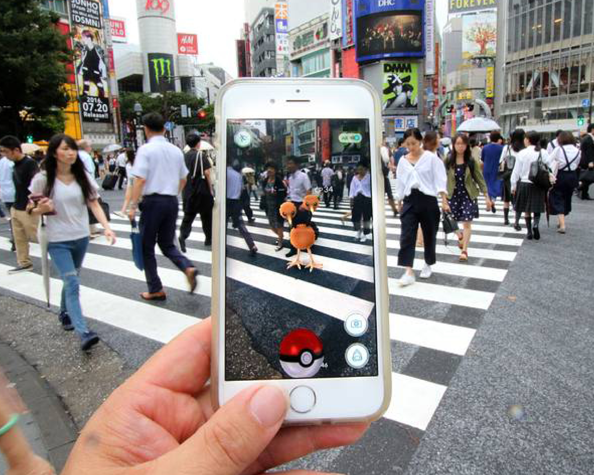
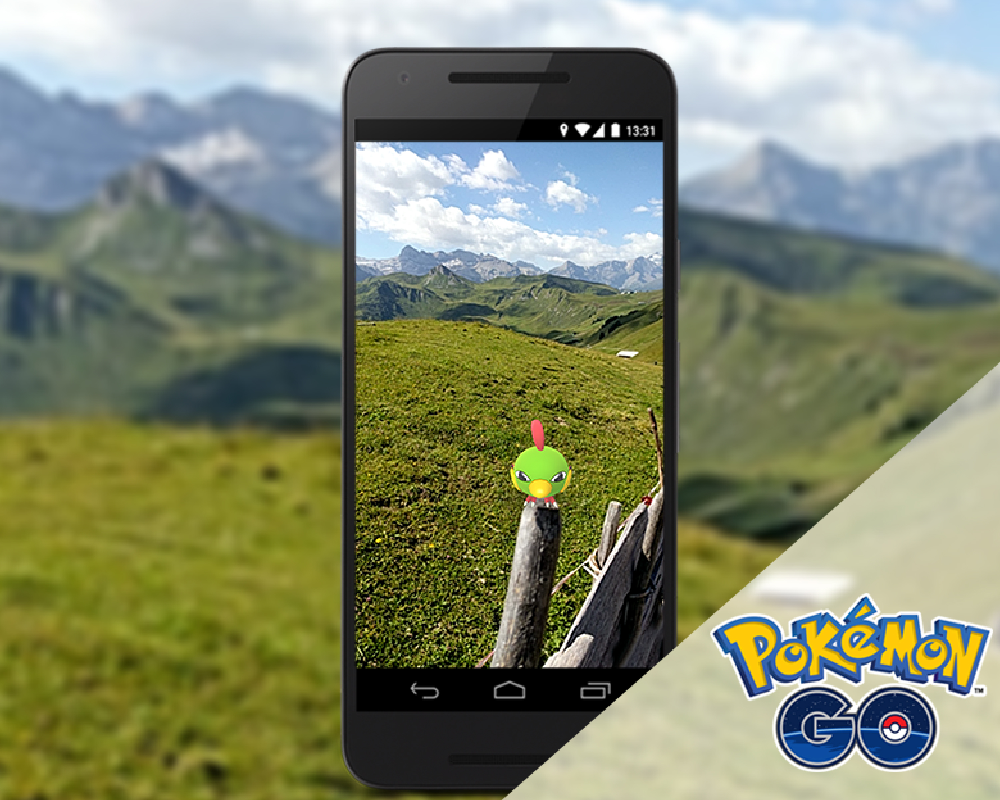

- 

- 
Pokémon GO es un juego de realidad aumentada basado en la
localización desarrollado por Niantic para dispositivos de iOS y Android. Es un juego gratuito que te
permite buscar y capturar personajes de la saga Pokémon escondidos en ubicaciones del mundo real y luchar
con ellos, para lo cual debes desplazarte físicamente por la ciudad para poder progresar.